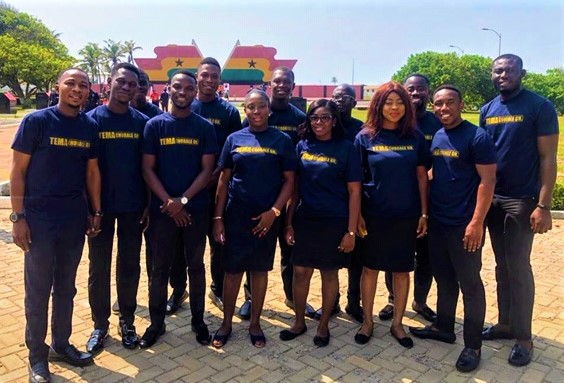

history
The Tema Chorale Ghana has been in existence for more than two years. It was established in September, 2017 and was incorporated and registered as a non-profitable group with the Registrar General's Department. The choir is adjudged one of the fastest choral groups in Ghana and its numerical strength stands at 25. It has for its credit an album titled "ADOM" meaning Grace.
Motto: ‘The Lord is our Shepherd’.
Mission and Vision: To build a sustainable world-class non- denominational choir, with an excellent brand of performers. And to also serve members with passion and dedication, with the goal of creating a culture that recognizes choir as an essential part of society and a valuable means for community engagement.
Values: Tema Chorale Ghana believes that music is a community enterprise and it is our role to share our gift of music in our community through partnership and collaboration.
That the choral medium is one of integrity that values its art, audience, singers and organization. That singing fosters an environment of fun, joy and worth. That singing is an art of excellence and distinction requiring discipline of the person, preparation and performance Founding Directors. The founders of Tema Chorale Ghana Mr. George Banahene Opoku and Mr. Sampson Jerry Addo have almost 20 years experience in the choral industry and have performed at Togo with various groups including Lom’e Choir, choirs from Nigeria, Cote D'ivoire Benin and Ghana. They have also performed with Brain More University Choir in Philadelphia Pennsylvania USA, Morgan State University Choir in Biltmore USA, Missouri University in St. Louri in the USA, Calvary Methodist Church and Ebenezer Methodist Church in Virginia Woodbridge and also performed at the Ebenezer Methodist Church in Massachusetts Worcester from 2013 to 2017.
The choir has performed at various national programs including the Thanksgiving Service of the late Professor, Emeritus John Pobee, (late husband of Ghana Ambassador to USA) at St. Anthony Anglican Church of Podua, Abelemkpe- Accra, it also performed at the President and the Vice President Awards Dinner Dance at the National Theatre. The choir also had the privilege to perform at the late Vice President, His excellency Paa Kwesi Amissah Authur's Funeral, at the Asomdwe Park, Accra, the Former Chief Justice of Ghana, Sophia A.B Akuffo’s send-off party at her residence at the Accra High Street, the Anglican Bishops 5th Inauguration at the international Banquet Hall, birthday party of the wife of Chris Wilmot, birthday party of her Ladyship Justice Kudjwo Bartels, many churches in Ghana and other programs including weddings and other recreational programs.